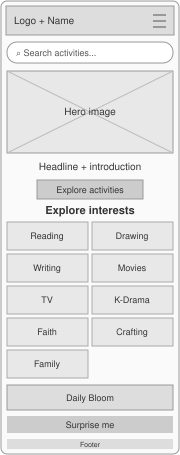
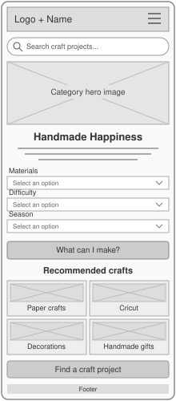
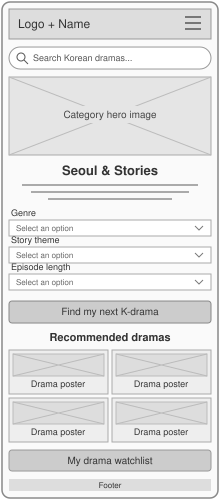
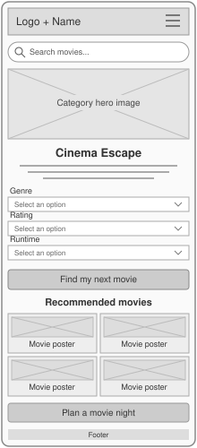

Overview
Purpose
Increase productivity, activity, closeness between people, using a bloom as a idea generator. At times overwhelm, or bordem can make us unable to decide what to do, this webpage helps to combat that.
Audience
Individuals, families, and couples who have a hard time making choices, but like reading, writing, drawing, crafting, movies, family time.
Dynamic elements
Guests will be able to interact with the website by selecting activities based on their mood, interests, and available time, as well as comparing activities they can participate in. JavaScript arrays will allow guests to store activities they want to keep and those they are interested in. When guests click a button, event listeners will allow them to navigate to another page or select an activity.
The use of functions and ES modules in this project will allow us to separate activity data from application logic. Activities will be stored in objects and filtered using array methods. If no activities match the guest's selections, the webpage will display a message encouraging them to try again. DOM manipulation will allow recommendations to be displayed in a block format with buttons for guests to select their preferred activities.
Branding
Website Logo
Style Guide
Color Palette
Palette URL: https://coolors.co/6f8f72-d79aa5-d9b26f-faf6ef-3f4a40
| Primary | Secondary | Accent 1 | Accent 2 | Accent 3 |
|---|---|---|---|---|
| #6F8F72 | #D79AA5 | #D9B26F | #FAF6EF | #3F4A40 |
Typography
Heading Font
Paragraph Font
Normal Paragraph Example
Colored Paragraph Example
Pseudocode for your project
Wireframes
Desktop homepage wireframe

Mobile homepage wireframe

reading wireframe

craft wireframe

faith wireframe

family wireframe

korean drama wireframe

tv wireframe

movies wireframe

writing wireframe

drawing wireframe

Landing page
- Home page, can always be accessed.
- Header and navigation
- Banner - tagline
- Mood explorer
- Hobby collection buttons
- Surprise me
- Footer web info and insight
[Hobby pages]
- Home page, can always be accessed.
- Header and navigation
- Banner - tagline
- interests/mood
- activities/collections
- Surprise me
- Footer web info and insight